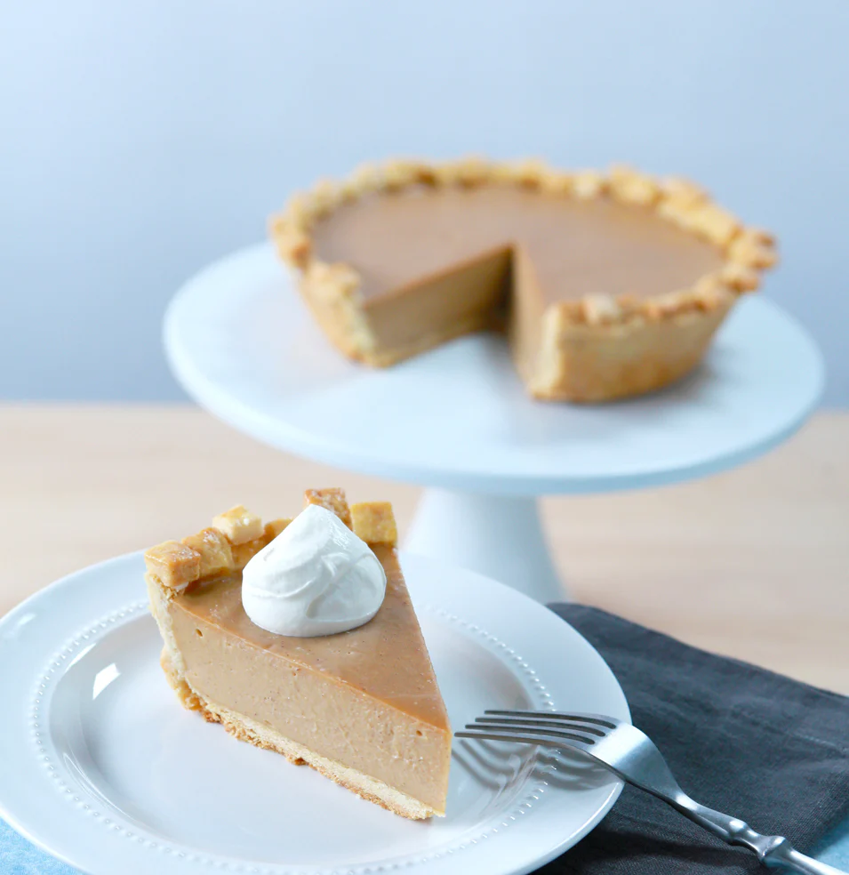

Butterscotch cinnamon pie

A sweet cinnamon butterscotch pie recipe with a classic crust made to look like pixels.
This pie is a healing agent in the game Undertale
and a scrumptious dessert in real life!
ingredients
for the dough
- 2,5 cups flour
- 2 tablespoons sugar
- 0,5 vanilla bean
- 1 teaspoon salt
- 0,5 cup salter butter, ice cold
- 0,5 cup butter flavor shortening, cubed and ice cold
- 6 tablespoons buttermilk, chilled
- egg wash
for the filling
- 6 tablespoons cornstarch
- 1 teaspoon ground cinnamon
- 1 teaspoon salt
- 4 egg yolks
- 0,25 cup salted butter
- 0,5 cup dark brown sugar
- 1 cup heavy cream
- 2,5 cups whole milk
- 0,5 cup butterscotch chips
needed equipment
- large mixing bowl
- pie dish
- rolling pin
- plastic wrap
- dry uncooked beans
- small square cookie cutter
Cooking
Dough
- Preheat oven to 350ºF.
- In a large bowl combine flour, sugar, vanilla bean, and salt.
- Add butter and shortening and then work between fingers until the mixture resembles coarse meal.
- Drizzle in ice-cold buttermilk and continue working to form dough.
- Shape the dough into a disc and wrap tightly in plastic wrap. Refrigerate for 2 to 24 hours.
- Roll it out to 1/4 inch thick and place into pie pan. Remove the excess.
- Roll out dough excess and cut out small squares.
- Brush egg wash along the edges and then arrange the dough squares in a pixelated design.
- Prick the bottom and inside edges of the pie crust with a fork.
- over the pie with plastic wrap and then fill it with uncooked beans. Wrap the beans with the excess plastic. Egg wash edges of the crust.
- Bake for 35 minutes until golden brown around the edges.
- Remove beans and bake another 10 to 15 minutes.
Filling
- In medium bowl, whisk cornstarch, salt and egg yolks until smooth. Whisk in milk.
- In a saucepan, melt butter over medium high heat and add dark brown sugar. Bring to a boil and whisk constantly for 3 minutes.
- Combine the cream mixture and the sugar mixture. Slowly whisk in the egg mixture.
- Add salt and cinnamon and then bring to a boil, whisking constantly.
- Once thickened, remove from heat and then whisk in butterscotch chips.
decoration!
- Pour the filling into the pie shell and then smooth the top.
- Place the pie on a cooling rack for an hour and then refrigerate to completely cool.
- Serve in slices with whipped cream and a cinnamon stick garnish.
- TaDa! Use this pie during the fight against Asgore to lower his attack and defenses! Or just eat it...!
This recipe was taken from https://rosannapansino.com/blogs/recipes/undertale-butterscotch-cinnamon-pie
home